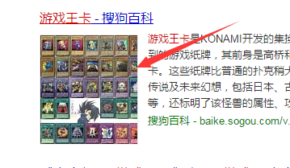
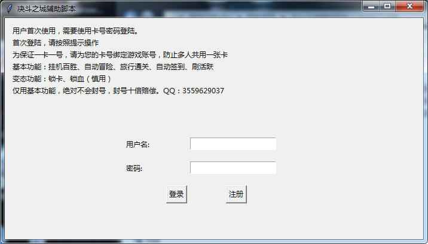
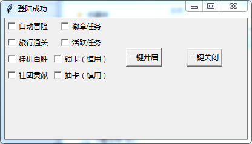

游戏脚本
大家好，我是mythSun。
很高兴能在这里和大家分享，做一个游戏脚本（外“挂”）。
话不多说，直接开始。

这本来是桌面纸牌，被游戏公司转化成了电子游戏，
我呢，恰恰喜欢这个“游戏王卡”，就玩了，
可能是因为刚出的游戏，让我有流量分析工具等一堆工具检测到了几个重要的数据，
然后加以“嗯嗯你懂的”，发现了一个bug。
发现bug了，作为程序员的我们，怎么能闲着呢？
利用刚学的python，查资料，抓紧写了一个脚本，其实就是外挂，
嘿嘿，那叫一个爽，用了一个周没被发现，
还给了游戏里的朋友一起用，后来良心发现，
主动联系人公司，提交了这个bug，期待怎么不给我个公告奖励一下我，
结果人家没搭理我。。。不知道现在bug修复了没，反正自那以后也没玩过。
话不多少，介绍一下吧。核心代码就不发了，再发再扯上法律问题，我就尴尬了。
首先这是打开之后的界面。
因为怕给游戏里的朋友玩，被疯传，然后我负责任，就设置了账号密码，一个只能用一次，免得疯传。

登陆之后，这是主页面。

选择自己需要的，前面四个能自动帮玩家刷完每日基本任务，
获得大量资源，免了“肝”，后面四个功能，其实不是很完善，
因为有时候会程序终止，毕竟我才学了俩月python。
开启之后，这个就会运行到后台，然后你只需要挂着你那个游戏就行，
他就自动帮你打了，当然你也可以看着界面发呆，哈哈哈哈。
就到这吧，这个就是一个分享，算是自己学python的一件趣事，
毕竟能写一个外挂，也是人生第一次嘛。
郑重声明：
本人未扩散该外挂，未用此盈利，并且及时提交了bug建议（只不过没搭理我，囧）
本人未扩散该外挂，未用此盈利，并且及时提交了bug建议（只不过没搭理我，囧）
本人未扩散该外挂，未用此盈利，并且及时提交了bug建议（只不过没搭理我，囧）
你以为这就完了吗？
当然不会让各位空手而来，免费送大家一个静态网站爬虫吧
（爬豆瓣高分100电影的名称，就不用再逛知乎找电影了，一个爬虫满足你）
直接上代码，属于基本操作，不多解释了。里面都有注释，也有思路
basic_crawler.crawler_start.py
第二个文件代码basic_crawler.crawler_func.py